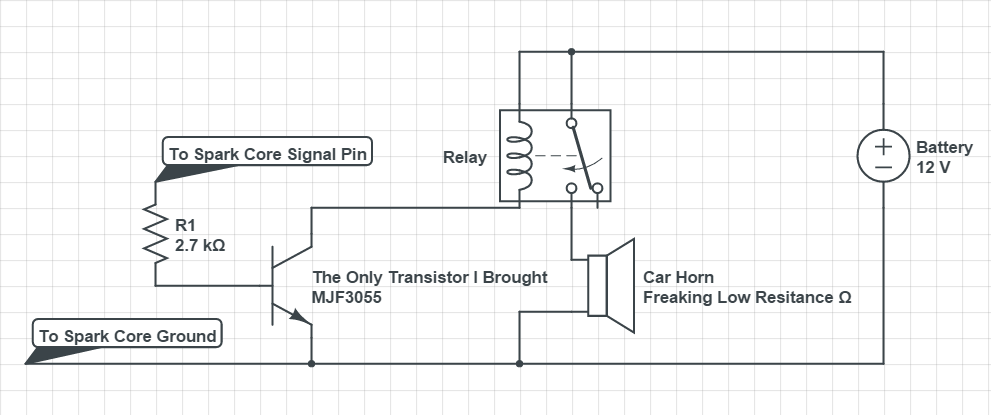
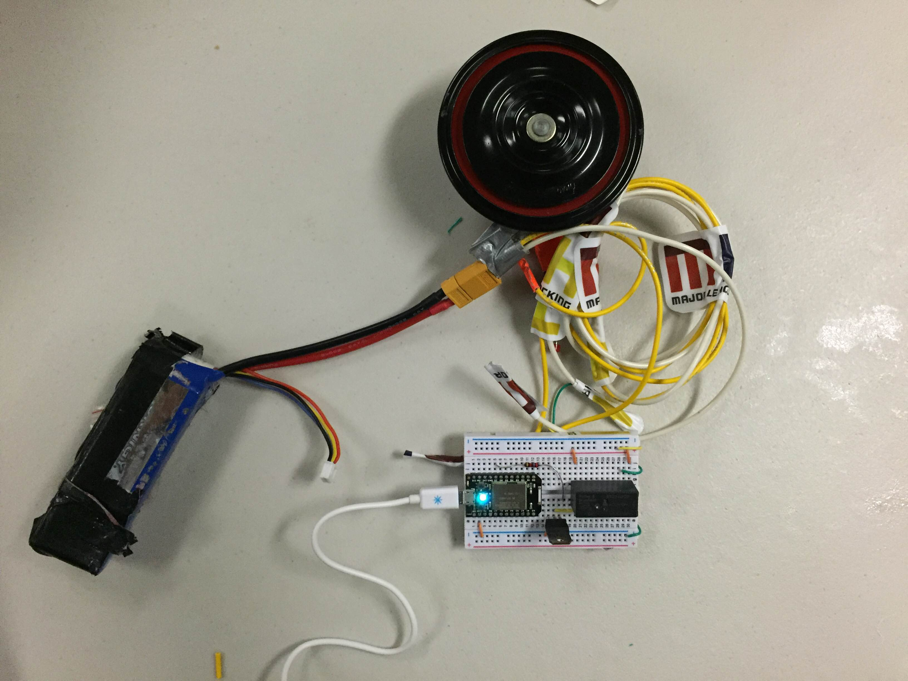
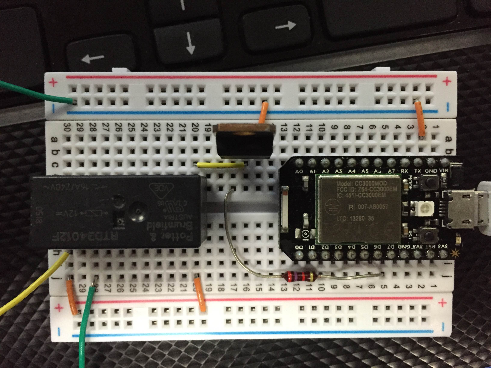

An explantion of the Project
The Morse code honker uses a bunch of random parts to accomplish its goal of honking a Message. I built this Project at hackUstate and only brought a few parts so it was very much a make it work situation.
I was able to borrow a Spark core from the hackathon which covered the microcontroller and web part. The Spark core api is incredibly helpful it covers all of the hard work of networking in the project. Rather than sending data to a set ip address related to the spark core, data is posted to the spark cloud which transfers the data to the Spark Core Board. This means that I can easy communicate with the car horn through jquery posts without having to setup port forwarding and other network shenaggins.

The web page that controls the horn is a bunch of fairly simple HTML/CSS and JavaScript code. The most important code on the webpage is the jQuery command that sends the string to the cloud.
$.post("https://api.particle.io/v1/devices/55ff6e065075555323221787/led?access_token=765658b35234c4bf8506912f3c66493adc36c705", {args: document.getElementById("message").value.toLowerCase()})
The spark core is programmed to receive a string from the cloud and then it handles the parsing and converts it to the pulses that control the car horn.
Code For The Spark Core
The circuit I used uses both a power transistor and relay to switch the car horn off and on. I tried the power transistor by itself and it had too high of an internal resistance to trigger the car horn. I tried the relay by itself but the Spark core doesn’t have the 12 volts to power the relay. Normally one should be able to find one component that could control the car horn but since I had limited supplies I combined them.



The circuits requires two power supplies the Spark Core takes a 5 volt power supply and the car horn use a 12 volt battery capable of delivering the about 10 amps the car horn draws.
Return Home